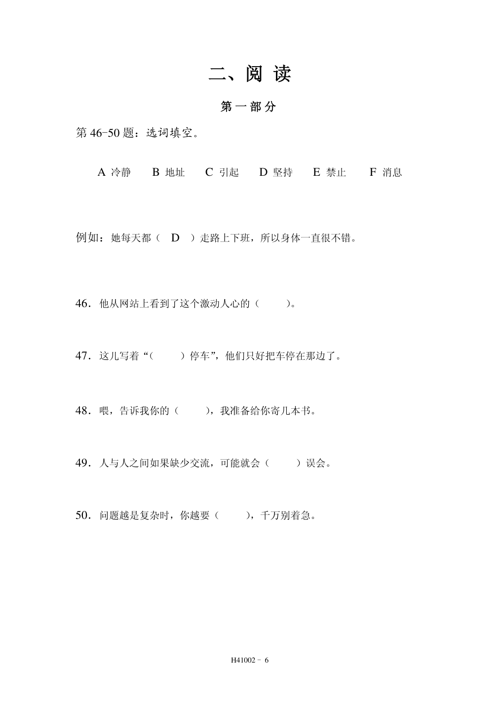
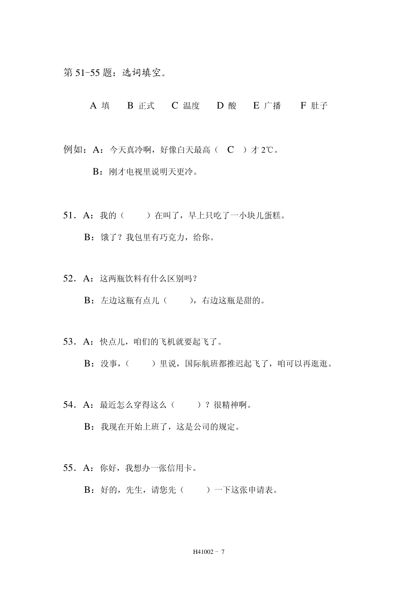
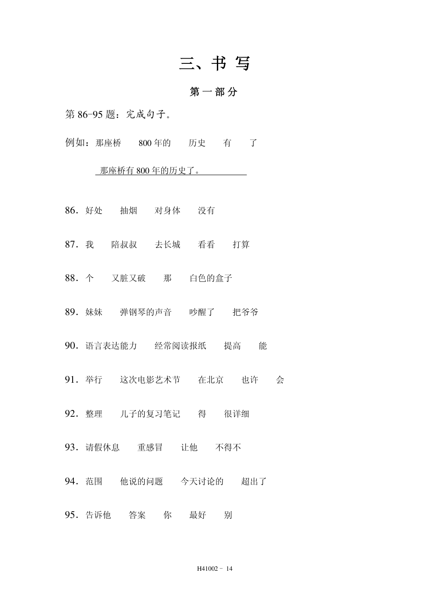
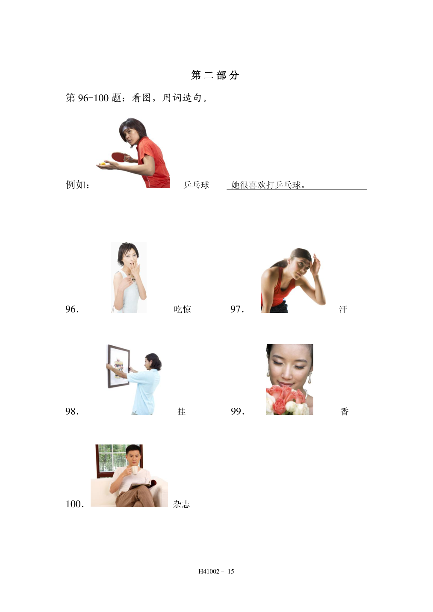

HSK4 – Đề 2 (H41002)
Bước 1: Kiểm tra bố cục và nội dung câu hỏi trên PDF gốc.
Không hiển thị đáp án câu 1–100. Không nhập SQL.
Từ cho sẵn câu 96–100: 96: 吃惊 · 97: 汗 · 98: 挂 · 99: 香 · 100: 杂志
Trang 7

Trang 8

Trang 15

Trang 16
